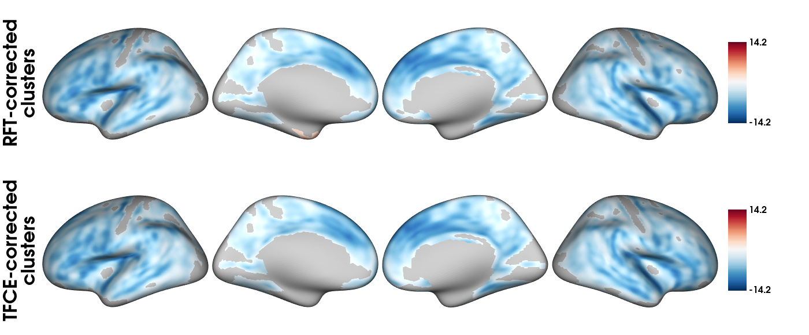

Example analyses with VertexWiseR - Example 1
Charly Billaud, Junhong Yu
2024-08-12
VertexWiseR_Example_1.RmdInstalling VertexWiseR and checking for requirements
The following code installs the package and makes sure all requirements, prompting the user to install dependencies, in order to allow analyses to work.
install.packages("VertexWiseR") VWRfirstrun() checks all system requiremements for specific functions, and gives the opportunity to download and install each of them.
Example analysis 1: linear model of age and cortical thickness, and meta-analytic decoding
The first stage of the analysis assumes that a preprocessed Freesurfer subjects directory is present. However, this code makes use of an already-extracted cortical thickness (CT) dataset made available on the VertexWiseR git repository.
The following commented out code is the script which was used to produce this demo data with the SPRENG dataset (Spreng et al. 2022):
#SURFvextract(sdirpath = SUBJECTS_DIR, filename = "SPRENG_CTv", template='fsaverage5', measure = 'thickness', subj_ID = T)The surface can be loaded straight from the online repository and then smoothed :
SPRENG_CTv = readRDS(file = url("https://github.com/CogBrainHealthLab/VertexWiseR/blob/main/inst/demo_data/SPRENG_CTv_site1.rds?raw=TRUE"))
SPRENG_CTv_smoothed = smooth_surf(SPRENG_CTv, 10)The SPRENG behavioural data (for participants in site 1, SPRENG_behdata_site1.csv) is accessible from the VertexWiseR package internal data:
dat_beh=readRDS(system.file(package='VertexWiseR', '/demo_data/SPRENG_behdata_site1.rds')) To run the vertex-wise model analysis with random field theory-based cluster correction, testing for the effect of age, controlling for sex, on CT:
model1_RFT=RFT_vertex_analysis(model = dat_beh[,c("sex","age")],
contrast = dat_beh[,"age"], surf_data = SPRENG_CTv_smoothed, p = 0.05)
model1_RFT$cluster_level_results## $`Positive contrast`
## clusid nverts P X Y Z tstat region
## 1 1 142 0.015 -22.8 11.5 -42 6.45 lh-temporalpole
##
## $`Negative contrast`
## clusid nverts P X Y Z tstat region
## 1 1 8039 <0.001 47 4.0 -16.6 -12.64 rh-superiortemporal
## 2 2 7660 <0.001 -34 -25.7 16.2 -14.23 lh-insulaTo run the vertex-wise model analysis with threshold-free cluster enhancement-based cluster correction, testing for the effect of age, controlling for sex, on CT; with 1000 permutations:
model1_TFCE=TFCE_vertex_analysis(model= dat_beh[,c("sex","age")],
contrast = dat_beh[,"age"],
surf_data=SPRENG_CTv_smoothed,
nperm=1000,
nthread=4)
TFCEoutput = TFCE_threshold(model1_TFCE, p=0.05)
TFCEoutput$cluster_level_results## $`Positive contrast`
## [1] "No significant clusters"
##
## $`Negative contrasts`
## clusid nverts P X Y Z tstat region
## 1 1 8098 <0.001 47 4.0 -16.6 12.64 rh-superiortemporal
## 2 2 7617 <0.001 -34 -25.7 16.2 14.23 lh-insulaTo plot the results of both models on an inflated fsaverage5 surface:
tmaps = rbind(model1_RFT$thresholded_tstat_map, TFCEoutput$thresholded_tstat_map)
plot_surf(surf_data = tmaps,
filename ='SPRENG_tstatmaps.png',
surface = 'inflated',
title=c("RFT-corrected\nclusters", "TFCE-corrected\nclusters"),
cmap='RdBu_r',
show.plot.window=FALSE)
To run meta-analytic decoding of the significant negative clusters (the neurosynth dataset needs to be installed as VWRfirstrun() allows):
surf_decoding=decode_surf_data(TFCEoutput$thresholded_tstat_map, contrast="negative")
head(surf_decoding)## keyword r
## 538 retrieval 0.065
## 202 episodic 0.059
## 348 memory 0.053
## 198 engagement 0.048
## 332 linguistic 0.048
## 439 older 0.047